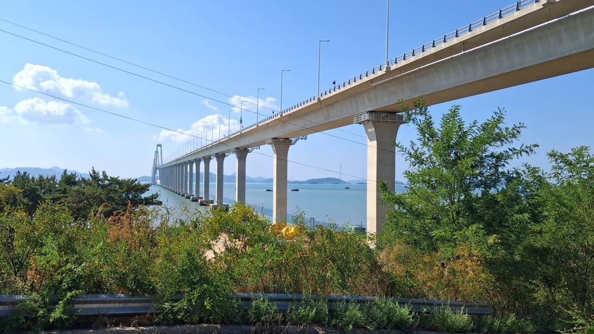
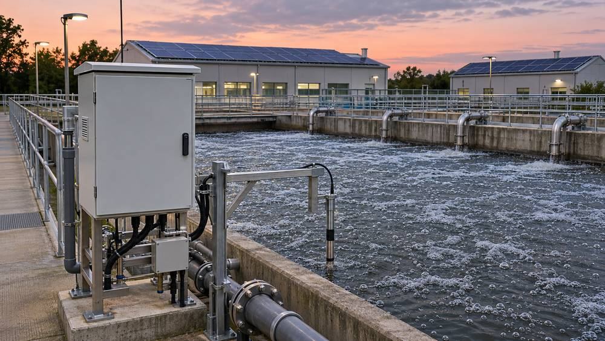

원전 발전량, RPS 의무공급량 계산서 빼자는 법안
김위상 의원 등 12명이 낸 재생에너지법 개정안으로, 공포 6개월 뒤 시행된다. 의견은 11월 22일까지 국회입법예고 누리집에서 낸다.




하수처리장 방류수 질소를 하루 전에 예측해 송풍 전력비 10% 줄인다…부산 강변하수처리장 등 수질원격감시 우수사례 4곳
기후부·한국환경공단 선정, 4곳 중 3곳이 인공지능 예측 모형 / 광주 평동3차 공공폐수처리시설은 약품 61% 덜 써 누적 1억2,000만 원 절감 기대

재생에너지 기자재 관세 경감, 2029년까지 연장 법안
배준영 의원 등 13명이 낸 조세특례제한법 개정안으로, 전기·수소 시내버스 부가세 면제도 2030년까지 늘린다. 입법예고는 11월 19일까지다.
오늘 주목할 소식
- 노후 발전설비 안전성평가 법안, 위험등급이면 철거
- 재활용 골재로 농지·산지 성토 금지, 폐기물관리법 개정안
- 태양광·풍력 국내생산세액공제 한도 2배 법안
- 공공기관 냉방 실내온도 기준 26℃ 이상, 난방 20℃ 이하로…기후부 고시 개정안 23일까지 의견 받는다
- 울산시 2027~2031년 기후위기 적응대책안 6개 부문 20개 과제…24일 시민설명회서 의견 받는다
- 지방정부에 조례 본보기 10개…폐교 대부료 낮춘 제주, 활용률 71.4%로 올라
햇빛소득마을 더보기 ›
정치 더보기 ›
원전 발전량, RPS 의무공급량 계산서 빼자는 법안
김위상 의원 등 12명이 낸 재생에너지법 개정안으로, 공포 6개월 뒤 시행된다. 의견은 11월 22일까지 국회입법예고 누리집에서 낸다.
정책 더보기 ›
원전 발전량, RPS 의무공급량 계산서 빼자는 법안
김위상 의원 등 12명이 낸 재생에너지법 개정안으로, 공포 6개월 뒤 시행된다. 의견은 11월 22일까지 국회입법예고 누리집에서 낸다.
산업·경제 더보기 ›
재생에너지 기자재 관세 경감, 2029년까지 연장 법안
배준영 의원 등 13명이 낸 조세특례제한법 개정안으로, 전기·수소 시내버스 부가세 면제도 2030년까지 늘린다. 입법예고는 11월 19일까지다.
금융 더보기 ›
지역 중소·중견기업 보증부 대출 4조5,000억 원, 시·도 공모 성적 따라 나눈다
1차 13개 시·도에 3조7,400억 원…최우수 3곳 3,800억 원씩 / 11월 2일 발표보다 등급별 금액 줄고 7,600억 원은 2차 초광역 공모로
사회 더보기 ›
하수처리장 방류수 질소를 하루 전에 예측해 송풍 전력비 10% 줄인다…부산 강변하수처리장 등 수질원격감시 우수사례 4곳
기후부·한국환경공단 선정, 4곳 중 3곳이 인공지능 예측 모형 / 광주 평동3차 공공폐수처리시설은 약품 61% 덜 써 누적 1억2,000만 원 절감 기대
지역 더보기 ›
울산시 2027~2031년 기후위기 적응대책안 6개 부문 20개 과제…24일 시민설명회서 의견 받는다
회야댐 홍수조절·폭염 취약계층 보호 등 핵심사업, 세부사업 총계는 74개 / 부문별 사업 수를 더하면 73개…시 "협의 중이라 바뀔 수 있다"
오피니언 더보기 ›
이순형 동신대 교수, 전남광주 재생에너지 50GW 일감 지역 기업에 돌리자 제안
투자 250조 원 추산하며 발주 시간표·공동도급·인력 양성 주문…산업부는 호남 주요 전력망 확충을 2031년 이후로 설명
시민에너지 더보기 ›
전력망 막힌 햇빛소득마을 133곳에 저장장치, 국비 981억 원 커뮤니티솔라 공모 시작
에너지공단, 55개 배전선로에 ESS 지원…국비 40%·지방비 30%·민간 30% / 5개 권역마다 통합발전소 사업자 1곳, 12월 11일 마감
原発の発電量を再エネ義務供給量の算定から除外へ…韓国国会議員12人が再生可能エネルギー法改正案、22日まで立法予告
義務供給量は総電力生産量の25%以内で毎年大統領令で定める / 原発事業者の供給認証書購入負担を軽くする趣旨、施行は公布6か月後


下水処理場の放流水の窒素を1日前に予測し送風電力費10%削減へ…釜山・江辺下水処理場など水質遠隔監視の優秀事例4件
気候エネルギー環境部と韓国環境公団が選定、4件中3件がAI予測モデル / 光州・平洞3次公共廃水処理施設は薬品使用を61%減らし累計1億2,000万ウォンの節減見込み
再生可能エネルギー機材の関税軽減、2029年まで延長する法案
国会議員13人が提出した租税特例制限法改正案で、電気・水素の市内バスの付加価値税免除も2030年まで延ばす。立法予告は11月19日まで。
今日の注目ニュース
- 老朽風力など発電設備に定期安全性評価、危険等級なら撤去命令…韓国国会に法案2件、22日まで立法予告
- リサイクル骨材による農地・山地の盛土を禁止、廃棄物管理法改正案
- 太陽光・風力の国内生産税額控除、上限を2倍に引き上げる法案
- 公共機関の冷房時の室内温度基準を26℃以上、暖房時を20℃以下に…気候部が告示改正案、23日まで意見募集
- 蔚山市、2027~2031年の気候危機適応対策案は6部門20課題…24日の市民説明会で意見募集
- 大邱市、7区・郡の531カ所に太陽光・地中熱1,850kW…総事業費約34億ウォン
太陽光所得村 もっと見る ›
政治 もっと見る ›
原発の発電量を再エネ義務供給量の算定から除外へ…韓国国会議員12人が再生可能エネルギー法改正案、22日まで立法予告
義務供給量は総電力生産量の25%以内で毎年大統領令で定める / 原発事業者の供給認証書購入負担を軽くする趣旨、施行は公布6か月後
政策 もっと見る ›
原発の発電量を再エネ義務供給量の算定から除外へ…韓国国会議員12人が再生可能エネルギー法改正案、22日まで立法予告
義務供給量は総電力生産量の25%以内で毎年大統領令で定める / 原発事業者の供給認証書購入負担を軽くする趣旨、施行は公布6か月後
産業・経済 もっと見る ›
再生可能エネルギー機材の関税軽減、2029年まで延長する法案
国会議員13人が提出した租税特例制限法改正案で、電気・水素の市内バスの付加価値税免除も2030年まで延ばす。立法予告は11月19日まで。
金融 もっと見る ›
江原道の鉄原・華川の郡議員、接境地域政策フォーラムで営農型太陽光の郡民ファンドを提案
鉄原の農地の約60%が外部所有との懸念…華川は軍の遊休推定地約1,087万㎡の活用特例拡大を提案
社会 もっと見る ›
下水処理場の放流水の窒素を1日前に予測し送風電力費10%削減へ…釜山・江辺下水処理場など水質遠隔監視の優秀事例4件
気候エネルギー環境部と韓国環境公団が選定、4件中3件がAI予測モデル / 光州・平洞3次公共廃水処理施設は薬品使用を61%減らし累計1億2,000万ウォンの節減見込み
地域 もっと見る ›
蔚山市、2027~2031年の気候危機適応対策案は6部門20課題…24日の市民説明会で意見募集
会野ダムの洪水調節・猛暑弱者の保護などが中核事業、細部事業の総数は74件 / 部門別の事業数を足すと73件…市「協議中で変わり得る」
オピニオン もっと見る ›
李舜衡・東新大教授、全南光州の再エネ50GW事業を地元企業の仕事に回すよう提案
投資250兆ウォンと推計し、発注スケジュール・共同受注・人材育成を要請…産業部は湖南の主要送電網の拡充を2031年以降と説明
市民エネルギー もっと見る ›
送電網に接続できない「日差し所得村」133か所に蓄電池、国費981億ウォンのコミュニティソーラー公募始まる
エネルギー公団、55の配電線にESS支援…国費40%・地方費30%・民間30% / 5圏域ごとに統合発電所事業者1社、12月11日締め切り
核电发电量拟不计入可再生能源义务供应量——韩国12名国会议员提出可再生能源法修正案，预告至22日
义务供应量在总发电量25%以内由总统令逐年确定 / 旨在减轻核电企业购买供应证书的负担，自公布6个月后施行
提前一天预测污水处理厂出水氮含量，鼓风电费可降10%…釜山江边污水处理厂等4个水质远程监测优秀案例
韩国气候能源环境部与韩国环境公团评选，4例中3例采用人工智能预测模型 / 光州平洞3期公共废水处理设施药剂用量减少61%，预计累计节省1.2亿韩元
今日关注
- 老旧风电等发电设备须定期接受安全评估，评为危险等级可责令拆除——韩国国会两项法案预告至22日
- 韩国拟禁止用再生骨料填埋农地和山地，废弃物管理法修正案
- 太阳能和风电国内生产税额抵免上限翻倍法案
- 韩国公共机构制冷室内温度标准调为26℃以上、供暖20℃以下…气候部告示修订案23日前征求意见
- 蔚山市2027~2031年气候危机适应对策草案含6个领域20项课题…24日市民说明会听取意见
- 大邱市在7个区郡531处推广光伏和地热共1,850kW，总投资约34亿韩元
阳光收入村 更多 ›
政治 更多 ›
核电发电量拟不计入可再生能源义务供应量——韩国12名国会议员提出可再生能源法修正案，预告至22日
义务供应量在总发电量25%以内由总统令逐年确定 / 旨在减轻核电企业购买供应证书的负担，自公布6个月后施行
政策 更多 ›
核电发电量拟不计入可再生能源义务供应量——韩国12名国会议员提出可再生能源法修正案，预告至22日
义务供应量在总发电量25%以内由总统令逐年确定 / 旨在减轻核电企业购买供应证书的负担，自公布6个月后施行
产业·经济 更多 ›
可再生能源设备关税减免延长至2029年的法案
13名国会议员提交的《税收特例限制法》修正案，还将电动和氢能市内公交车的增值税免税期限延长至2030年。立法预告至11月19日。
金融 更多 ›
江原道铁原、华川郡议员在边境地区政策论坛提议设立农光互补郡民基金
担忧铁原约60%农地归外地人所有…华川提议扩大军队闲置推定用地约1,087万㎡的利用特例
社会 更多 ›
提前一天预测污水处理厂出水氮含量，鼓风电费可降10%…釜山江边污水处理厂等4个水质远程监测优秀案例
韩国气候能源环境部与韩国环境公团评选，4例中3例采用人工智能预测模型 / 光州平洞3期公共废水处理设施药剂用量减少61%，预计累计节省1.2亿韩元
地方 更多 ›
蔚山市2027~2031年气候危机适应对策草案含6个领域20项课题…24日市民说明会听取意见
核心项目包括会野坝防洪调节、保护酷暑弱势群体等，细项总数写为74项 / 各领域项目数相加为73项…市政府称"仍在协商，可能变动"
评论 更多 ›
东新大学教授李舜衡建议：把全南光州50GW可再生能源订单交给本地企业
估算投资250万亿韩元，要求公布发包时间表、联合承包、培养人才…产业部称湖南主要电网扩建在2031年之后
市民能源 更多 ›
133个电网受阻的"阳光收益村"将配储能，国费981亿韩元社区光伏项目开始招标
能源公团为55条配电线路支持ESS…国费40%、地方费30%、民间30% / 5个圈域各选1家虚拟电厂运营商，12月11日截止
Korean bill would exclude nuclear output when calculating renewable supply obligations; 12 lawmakers' amendment open for comment until Nov. 22
Mandatory renewable supply is set yearly by presidential decree at up to 25% of total generation / The bill aims to ease nuclear operators' burden of buying supply certificates and would take effect six months after promulgation
Predicting sewage effluent nitrogen a day ahead to cut blower power costs 10%: Busan's Gangbyeon plant among four water-monitoring best cases
Selected by Korea's climate ministry and Korea Environment Corporation, three of the four use AI forecasting / Gwangju's Pyeongdong-3 public wastewater plant cut chemical use 61%, expecting 120 million won in cumulative savings
Bill would extend tariff relief on renewable energy equipment to 2029
The amendment filed by 13 lawmakers would also extend the VAT exemption for electric and hydrogen city buses to 2030. Public comment runs until November 19.
Today's highlights
- Aging wind turbines and other power plants would face regular safety assessments and removal orders if rated dangerous under two Korean bills open for comment until Nov. 22
- Korean bill would ban filling farmland and forest land with recycled aggregate
- Bill would double the cap on Korea's domestic production tax credit for solar and wind
- Korea moves public-sector cooling floor to 26°C and heating cap to 20°C, climate ministry takes comments until Nov. 23
- Ulsan's 2027-2031 climate adaptation draft has 6 sectors and 20 tasks, with a public briefing on Nov. 24 to collect views
- Daegu to add 1,850kW of solar and geothermal at 531 sites across seven districts, about 3.4 billion won in total
Sunlight Income Village More ›
- Storage for 133 grid-blocked solar income villages as 98.1 billion won community solar call opens
- Jecheon Cooperative and Geonju Sign MOU on "Sunlight Income Village" Projects, Specific Projects Still Undecided
- Goseong's Jangsin 1-ri sunlight income village to finish in December, with expected income of 81.29 million won a year
Politics More ›
Korean bill would exclude nuclear output when calculating renewable supply obligations; 12 lawmakers' amendment open for comment until Nov. 22
Mandatory renewable supply is set yearly by presidential decree at up to 25% of total generation / The bill aims to ease nuclear operators' burden of buying supply certificates and would take effect six months after promulgation
- Bill would extend tariff relief on renewable energy equipment to 2029
- Aging wind turbines and other power plants would face regular safety assessments and removal orders if rated dangerous under two Korean bills open for comment until Nov. 22
- Korean bill would ban filling farmland and forest land with recycled aggregate
- Bill would double the cap on Korea's domestic production tax credit for solar and wind
Policy More ›
Korean bill would exclude nuclear output when calculating renewable supply obligations; 12 lawmakers' amendment open for comment until Nov. 22
Mandatory renewable supply is set yearly by presidential decree at up to 25% of total generation / The bill aims to ease nuclear operators' burden of buying supply certificates and would take effect six months after promulgation
- Bill would extend tariff relief on renewable energy equipment to 2029
- Aging wind turbines and other power plants would face regular safety assessments and removal orders if rated dangerous under two Korean bills open for comment until Nov. 22
- Korea moves public-sector cooling floor to 26°C and heating cap to 20°C, climate ministry takes comments until Nov. 23
- Draft 30-year spent nuclear fuel plan open for public comment until Nov. 23, with on-site storage expected to fill up from Hanbit in 2030
Industry & Economy More ›
Bill would extend tariff relief on renewable energy equipment to 2029
The amendment filed by 13 lawmakers would also extend the VAT exemption for electric and hydrogen city buses to 2030. Public comment runs until November 19.
- Bill would double the cap on Korea's domestic production tax credit for solar and wind
- As the Czech nuclear project changes builders, Korea's trade ministry holds second review meeting; KHNP reports a week-by-week schedule up to selecting a new contractor
- K-water launches floating solar council with some 50 organisations, plans 500MW at 10 sites by 2030
- South Chungcheong sets up task force to help exporting SMEs calculate and verify carbon emissions, starting with steel and aluminium
Finance More ›
Cheorwon and Hwacheon county councillors propose an agrivoltaic residents' fund at border-region policy forum
Concern that about 60% of Cheorwon farmland is owned by outsiders; Hwacheon councillor proposes wider use of about 10.87 million sq. m of presumed idle military land
Society More ›
Predicting sewage effluent nitrogen a day ahead to cut blower power costs 10%: Busan's Gangbyeon plant among four water-monitoring best cases
Selected by Korea's climate ministry and Korea Environment Corporation, three of the four use AI forecasting / Gwangju's Pyeongdong-3 public wastewater plant cut chemical use 61%, expecting 120 million won in cumulative savings
- Korean bill would ban filling farmland and forest land with recycled aggregate
- Magnitude 3.6 quake near Sangju registers 0.0010g at research reactor 54km away; Hanbit records highest reading among nuclear plants at 0.0031g
- Six "innovation hubs" for cooperatives and social enterprises: Cheongdo to use a former health centre, Chilgok to link firms with public procurement
- Balcony solar demand from local governments reaches 13,629 homes, 13.6% of the 100,000-home target
Regions More ›
Ulsan's 2027-2031 climate adaptation draft has 6 sectors and 20 tasks, with a public briefing on Nov. 24 to collect views
Core projects include flood control at Hoeya Dam and heat protection for vulnerable residents; the draft lists 74 detailed projects in total / Sector-by-sector counts add up to 73, and the city says the plan may still change
- Daegu to add 1,850kW of solar and geothermal at 531 sites across seven districts, about 3.4 billion won in total
- South Chungcheong fire service finishes study on fire-safety grades for battery facilities, weighs risk-based prevention
- Suwon's Gwonseon 1-dong public car park puts 44.64kW of solar on a roof over its top deck
- Gangwon opens climate change response centre in Chuncheon; Korea Research Institute on Climate Change moved in first in September
Opinion More ›
Dongshin University professor Lee Soon-hyung proposes steering Jeonnam-Gwangju's 50 GW renewables work to local firms
Estimates 250 trillion won in investment, asks for tender schedules, joint contracting and training; industry ministry says main Honam grid expansion comes after 2031
Citizen Energy More ›
Storage for 133 grid-blocked solar income villages as 98.1 billion won community solar call opens
Korea Energy Agency backs ESS on 55 distribution lines, split 40% national, 30% local, 30% private / One VPP operator per region across five regions; applications close Dec. 11
- Gangwon Localities Spread "Wind Income": Taebaek Gadeoksan Dividends Reach 11.9 Billion Won for the Province, Goseong Eyes 20% Resident Stake
- Jecheon Cooperative and Geonju Sign MOU on "Sunlight Income Village" Projects, Specific Projects Still Undecided
- [Busan Sunlight Income ②] Corporate PPAs yield about 2%; researchers propose the city buy the power and save on emission allowances
- [Busan Sunlight Income ①] 10MW on public land with 4.5 billion won from citizens; pilot call opens January 2027